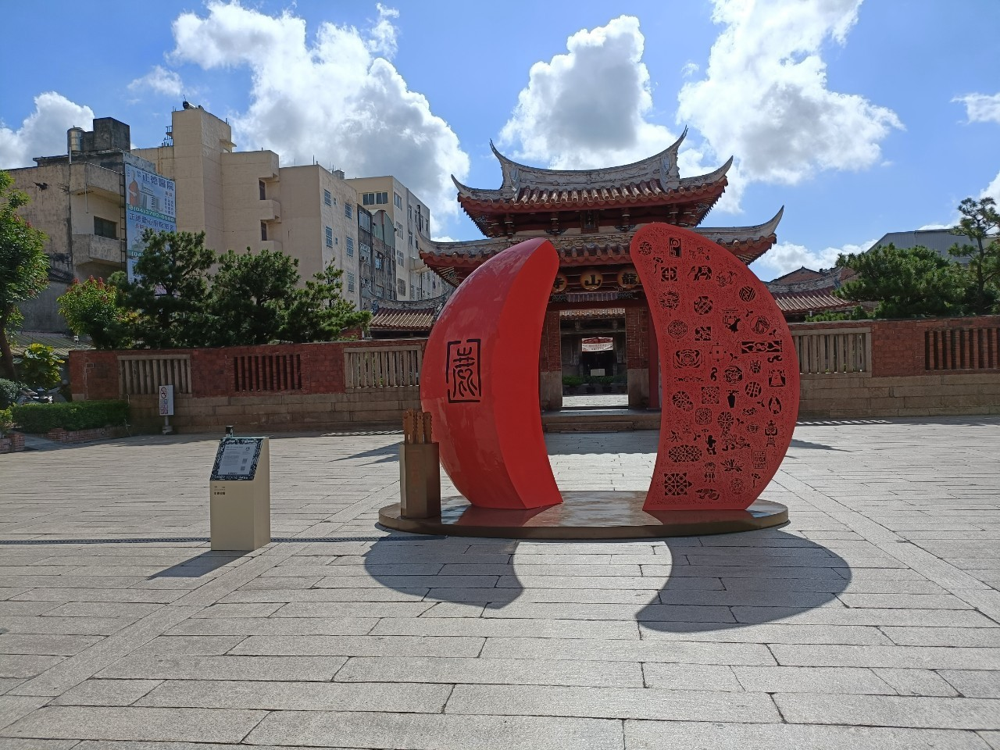

景點介紹
【龍山寺】
鹿港龍山寺位於彰化縣鹿港鎮，是台灣保存最完整的清代寺廟建築之一，被譽為「台灣寺廟建築藝術的經典代表」。主祀觀世音菩薩，是當地重要的佛教信仰中心與文化古蹟。
📜 歷史背景
- ⌛ 創建年代：最早可追溯至明末清初，現今建築主要為清乾隆年間重建，已有兩百多年歷史。
- 🏗 建築風格：融合閩南建築特色，採三進兩廊式格局，結構嚴謹、裝飾華麗，是台灣古蹟中保存最完整的木構建築之一。
🌸 建築與藝術特色
- 🐉 八卦藻井：正殿天花板的八卦藻井，結構精巧、雕工細膩，是龍山寺的最大特色之一。
- 🎨 木雕與彩繪：大殿門神、梁柱上的木雕細緻逼真，彰顯當時工匠的高超技藝。